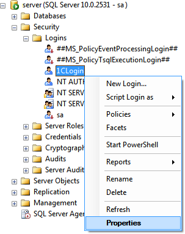
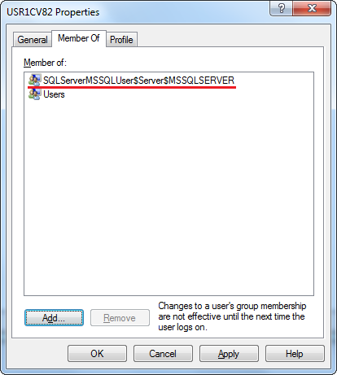

Выполнение следующей инструкции необходимо в случае использования аналитического показателя "Анализ взаимоблокировок", а также в случае использования аналитического показателя "Анализ ожиданий на блокировках", если включен режим сбора информации о гранулярности блокировок.
Локальный каталог трассировки - произвольный каталог на компьютере, где запущен Microsoft SQL Server. Пользователь, от имени которого запущен Microsoft SQL Server должен иметь права чтения и записи в каталог трассировки. В качестве локального каталога трассировки, можно использовать каталог временных файлов. Если это будет каталог временных файлов пользователя, от имени которого запущен Microsoft SQL Server, то настройка прав не требуется, т.к. в этом случае, все необходимые права уже есть.
Для пользователя, от имени которого запущены рабочие процессы кластера ЦУП должны быть настроены права доступа к Microsoft SQL Server и выданы разрешения работы с трассировками, в соответствии с нижеприведенной инструкцией.
1. Откройте SQL Server Management Studio и подключитесь к Microsoft SQL Server, на котором находится база данных исследуемой информационной базы.
2. Перейдите в раздел "<Instance>\Security\Logins" и создайте новый логин для пользователя от имени которого запускается ЦУП:
3. В открывшемся окне на странице "General" укажите имя настраиваемого пользователя операционной системы (при использовании Windows-аутентификации) или имя и пароль пользователя SQL Server'а (при использовании SQL Server аутентификации):

4. Откройте свойства SQL Server:

5. На странице "Permissions", для созданного логина, установите разрешение "Alter trace":

Данная настройка позволяет учетной записи, от имени которой подключается ЦУП, включать сбор трассировок на уровне сервера СУБД.
6. В случае если включен сбор информации о гранулярности блокировок, дополнительно необходимо установить разрешения "Connect any database" и "View any definition":


Включение этих разрешений позволяет учетной записи, от имени которой подключается ЦУП, получать информацию о структуре таблиц базы данных на уровне сервера СУБД (доступ к данным таблиц при такой настройке не предоставляется).
7. При использовании доменной аутентификации необходимо дополнительно настроить права доступа учетной записи Windows к серверу СУБД. Для этого на компьютере, где запускается SQL Server, добавьте пользователей, от имени которых запускаются рабочие процессы кластера базы ЦУП, в группу "SQLServerMSSQLUser$<SERVERNAME>$<INSTANCENAME>":
